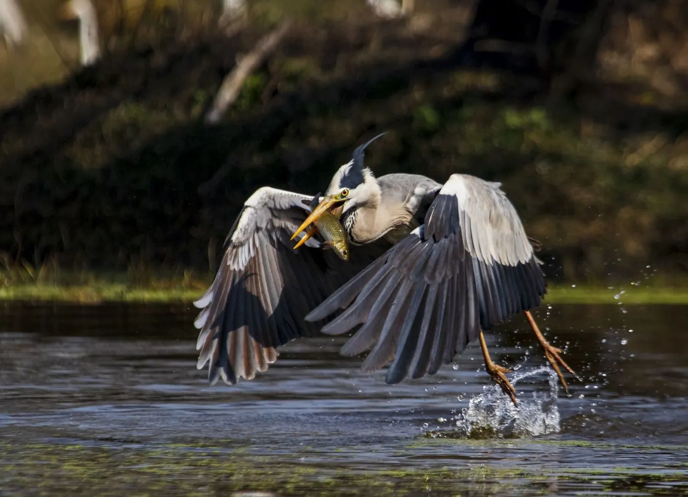

Shot breakdowns, 14 free field guides, a camera settings tool and checklists that work with no signal.
One lesson each, from real sightings. Download once, read offline in the park.
Same name everywhere. New safari stories, tips and reels every week.